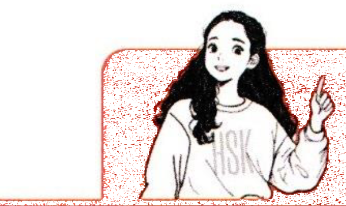
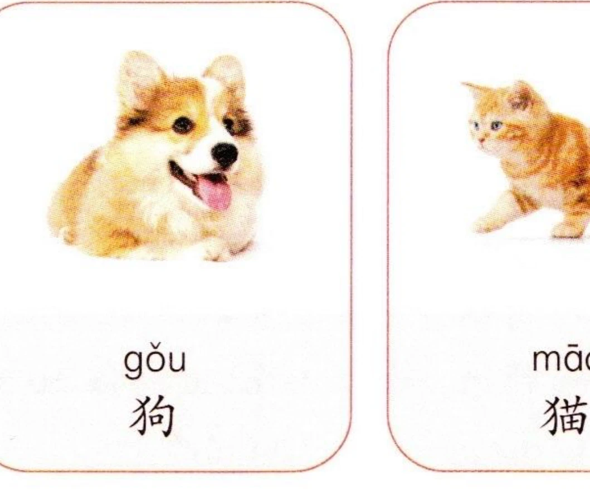
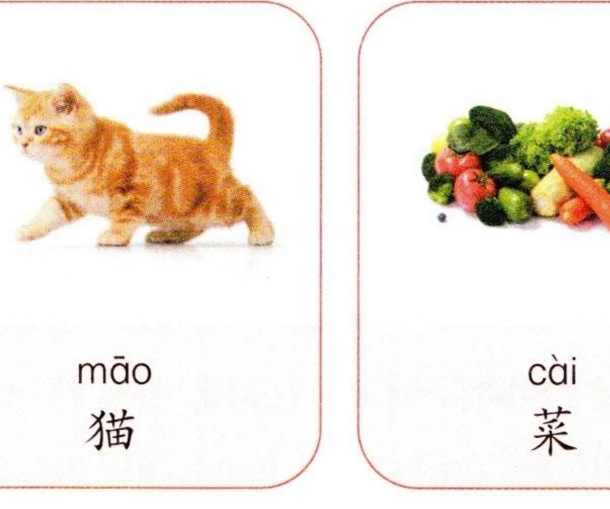
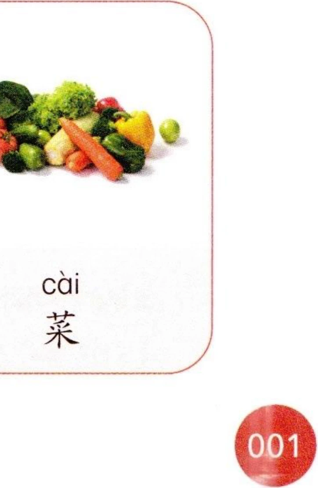

一、语音PronunciationФонетика 1-1
1汉语音节Chinese SyllablesКитайские слоги
汉语一个汉字通常对应一个音节，汉语音节一般由声母、韵母和声调组成，有时由韵母和声调组成。例如：In Chinese, each character typically corresponds to one syllable. A Chinese character-syllable generally consists of an initial, a final, and a tone, though sometimes it contains only a final and a tone. For example:В китайском языке каждый иероглиф обычно соответствует одному слогу. Китайский слог обычно состоит из инициали, финали и тона, хотя иногда он состоит только из финали и тона. Например:
| 声母InitialsИнициали | 韵母FinalsФинали | 声调TonesТоны | 音节SyllablesСлоги | 例字Example CharactersПримеры |
|---|---|---|---|---|
| - | ||||
| ˊ | ||||
| ˇ | ||||
| ˋ | ||||
| - | ||||
| ˊ |
看图片，先跟读音节，再大声朗读。Look at the pictures, listen and repeat the syllables, then read aloud.Посмотрите на картинки, послушайте и повторите слоги, затем прочтите вслух.


